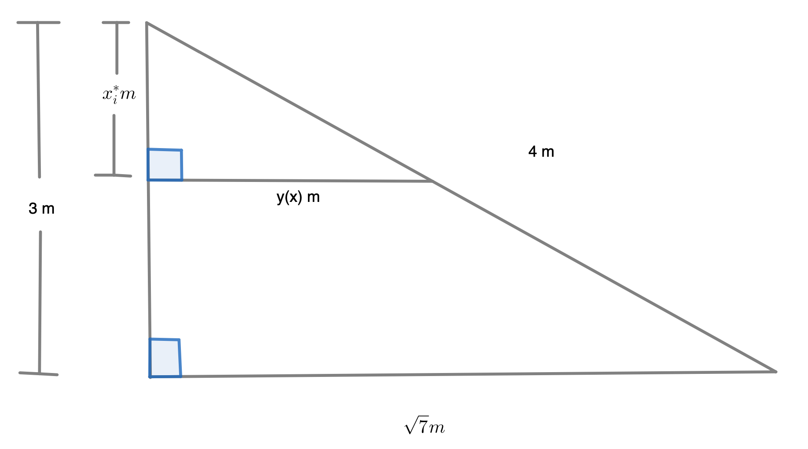
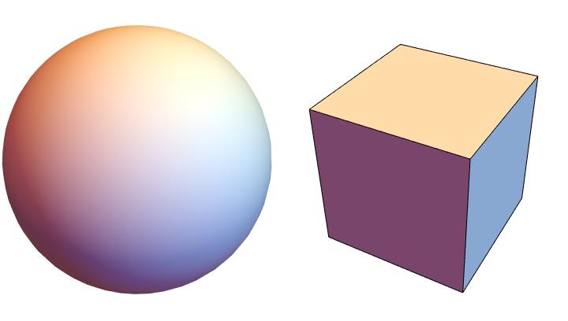
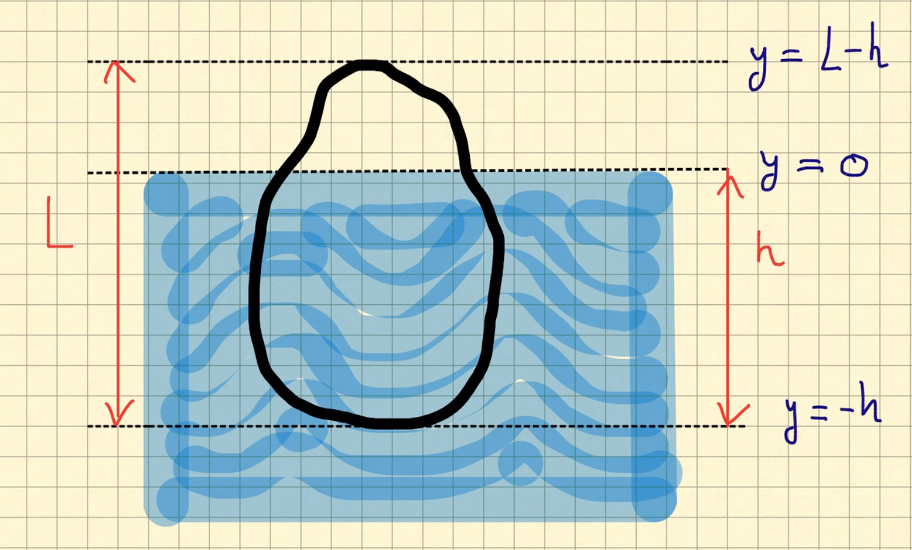
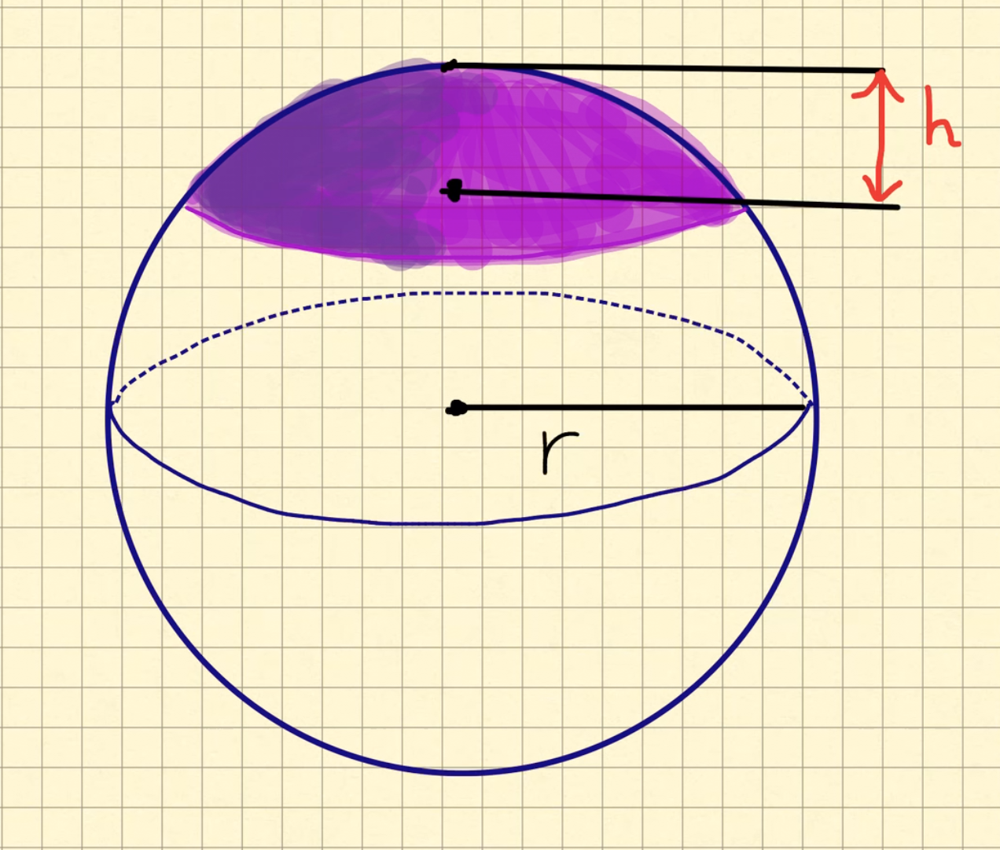

Recordamos que el promedio de los números $a_1,\dots, a_n$ está dado por:
$$
\frac{1}{n} \sum_{i=1}^n a_i
$$
Recordando el Ejercicio 4.10 tenemos
$$
\int_a^b f(x)dx=\lim_{n} \frac{b-a}{n}\sum_{i=1}^n f(x_i)
$$
donde el promedio de los valores de la función sobre los puntos de la
partición homogenea de longitud \(n\) aparece a la derecha de la igualdad. Tomando en cuenta esto se define
el promedio de una función $f$ integrable, sobre el subintervalo $[a,b]$, como
$$
P_a^b(f)=\frac{1}{b-a}\int_a^b f(x)dx
$$
Ejercicio
Para las siguientes funciones, prueba la fórmula dada para $P_a^b(f)$.
para $f$ una función constante con valor $k$, $P_a^b(f)=k$.
para $f(x)=mx+b$, $x\in \mathbb{R}$, $P_a^b(f)=m \frac{a+b}{2}+b$.
para $f(x)=x^2$, $x\in \mathbb{R}$, $P_a^b(f)=\frac{a^2+ab+b^2}{3}$.
Calculando de manera directa tenemos
Inciso 1:
\begin{eqnarray*}
P_a^b(f)=\frac{1}{b-a}\int_a^b k dx= \frac{1}{b-a}k(b-a)=k
\end{eqnarray*}
Inciso 2:
\begin{eqnarray*}
P_a^b(f)= \frac{1}{b-a}\int_a^b mx+ c &=& \frac{1}{b-a}\left(m \frac{b^2-a^2}{2}+ c (b-a) \right) \\
&=& \frac{1}{b-a}\left( m\frac{(b-a)(b+a)}{2}+ c (b-a) \right) \\
&=& m\frac{b+a}{2}+c
\end{eqnarray*}
donde en la segudna igualdad usamos diferencia de cuadrados.
Inciso 3:
\begin{eqnarray*}
P_a^b(f)=\frac{1}{b-a}\int_a^b x^2 dx &=& \frac{1}{b-a}\frac{b^3-a^3}{3} \\
&=& \frac{1}{b-a}\frac{(b-a)(a^2+ab+b^2)}{3} \\
&=& \frac{a^2+ab+b^2}{3}
\end{eqnarray*}
donde en la segunda igualdad usamos diferencia de cubos.
Ejercicio
Usando la identidad
\[
b^n-a^n =(b-a)\sum_{k=0}^{n-1} a^kb^{n-k-1}
\]
encuentra una fórmula general para el promedio de
las funciones potencia, $P_a^b(x^n)$, $n \in \mathbb{N}$.
Ejercicio
Prueba las siguientes propiedades del valor promedio. Las funciones, $f,g:[a,b]\to \mathbb{R}$ son dos
funciones integrables.
$P_a^b(f+g)=P_a^b(f)+P_a^b(g)$.
$P_a^b(\alpha f)=\alpha P_a^b(f)$ donde $\alpha \in \mathbb{R}$ es un escalar fijo.
Si $f(x)\leq g(x)$, para todo $x\in[a,b]$, entonces $P_a^b(f)\leq P_a^b(g)$.
Ejercicio
Sea $f:[a,b] \to \mathbb{R}$ una función integrable. Probar que si
$m \leq f(x) \leq M $, para todo $x\in [a,b]$ entonces
$$
m\leq P_a^b(f) \leq M.
$$
Por el Teorema 3.6 tenemos que
\[m(b-a) \leq \int_a^bf(x) dx \leq M(b-a). \]
Por lo tanto dividiendo por \(b-a\) en las respectivas desigualdades tenemos que
\[ m \leq \frac{1}{b-a} \int_a^bf(x) dx \leq M . \]
Pero \( P_a^b (f) = \frac{1}{b-a} \int_a^bf(x) dx\), es decir \[ m \leq P_a^b (f) \leq M.\]
Ejercicio
Sea $f:[a,b]\to \mathbb{R}$ una función continua. Demuestra que para todo subintervalo
$[c,d] \subseteq [a,b]$, existe un
punto $x_0$ (que depende de $c$ y $d$) tal que
de
$$
P_c^d(f)=f(x_0).
$$
Sugerencia: utiliza el Teorema del Valor Intermedio.
Ya que la función \(f\) es continua en el intervalo cerrado y acotado
\([a,b]\) ésta alcanza su máximo \(M=\max_{t\in [a,b]}{f(t)}\) y
mínimo \(m=\min_{t\in [a,b]}\{f(t)\}\). Por lo tanto, para todo punto \(t\in [a,b]\)
\[
m \leq f(t) \leq M.
\]
Integrando las desigualdades anteriores y dividiendo entre \(b-a\) llegamos
\begin{eqnarray*}
& m(b-a)= \int_a^b m dt \leq \int_a^b f(t)dt \leq \int_a^bM dt = M(b-a) \\
& \Rightarrow m \leq P_a^b(f)\leq M.
\end{eqnarray*}
Ahora, ya que la función es continua por el Teorema del Valor intermedio existe al menos un
\(x_0\in [a,b]\) tal que \( f(x_0)= P_a^b(f)\).
Ejercicio
Da un ejemplo de una función $f:[a,b]\to \mathbb{R}$ integrable tal que
el valor promedio nunca se alcanza. Es decir
$$
P_a^b(f)\not= f(x)
$$
para todo $x\in [a,b]$.
Ejercicio
Sea $f:[a,b] \to \mathbb{R}$ una función integrable en $[a,b]$. Demuestra que
$$
P_a^b(f)=\frac{c-a }{b-a}P_a^c(f)+ \frac{b-c}{b-a}P_c^b(f).
$$
Sea \(c \in (a,b)\), como \(f\) es integrable entonces por la
linealidad con respecto de intervalos (Teorema 3.18) tenemos que
\[ \int_a^b f(x) dx = \int_a^c f(x) dx + \int_c^b f(x) dx . \]
Dividiendo por \(b-a\) tenemos que
\begin{eqnarray*}
P_a^b (f) = \frac{1}{b-a} \int_a^bf(x) dx & = & \frac{1}{b-a} \int_a^cf(x) dx + \frac{1}{b-a} \int_c^bf(x) dx \\
& = & \frac{1}{b-a}\cdot\frac{c-a}{c-a} \int_a^cf(x) dx + \frac{1}{b-a}\cdot \frac{b-c}{b-c} \int_c^bf(x) dx \\
& = & \frac{c-a}{b-a}\cdot\frac{1}{c-a} \int_a^cf(x) dx + \frac{b-c}{b-a}\cdot \frac{1}{b-c} \int_c^bf(x) dx \\
& = & \frac{c-a}{b-a}V_a^c (f) + \frac{b-c}{b-a}V_c^b (f)
\end{eqnarray*}
Por lo tanto \[ P_a^b (f) = \frac{c-a}{b-a}V_a^c (f) + \frac{b-c}{b-a}V_c^b (f) . \]
Ejercicio
Sea $f:\mathbb{R} \to \mathbb{R}$ una función tal que es integrable para cualquier intervalo de la forma
$[-a,a]$, con $a>0$.
Si $f$ es una función par demuestra:
$$
P_{-a}^{a}(f)=P_0^a(f)
$$
Si $f$ es una función impar demuestra:
$$
P_{-a}^a(f)=0
$$
Ejercicio
Sea $f:[a,b]\to \mathbb{R}$ continua en $[a,b]$ y diferenciable en $(a,b)$.
Si $f'$ es monótona creciente en $(a,b)$ demuestra que :
$$
P_a^b(f)\geq f\bigg( \frac{a+b}{2}\bigg).
$$
Si $f'$ es monótona decreciente en $(a,b)$ demuestra que:
$$
P_a^b(f)\leq f\bigg( \frac{a+b}{2}\bigg).
$$
Primero afirmamos que si $f'$ es monótona creciente entonces
para cualquier $x_0 \in (a,b)$ se cunple
\begin{equation}\label{Eqn:Aux1ConcavidadValorPromedio}
f(x) \geq f(x_0)+ f'(x_0)(x-x_0)
\end{equation}
para todo \(x\in (a,b)\)
Por el Teorema del Valor Media para las derivadas tenemos que
para \(x\ne x_0\) existe un número \(c\) entre \(x\) y \(x_0\) tal que
\[
\frac{f(x)-f(x_0)}{x-x_0} = f'(c).
\]
Para probar \eqref{Eqn:Aux1ConcavidadValorPromedio} veamos dos casos.
Caso 1: \(x_0 < x \). En este caso tenemos que \(x_0 \leq c \leq x\)
por lo que al usar \(f'\) monótona creciente obtenemos \(f'(x_0)\leq f'(c)\). Por lo tanto
de la ecuación anterior se sigue
\begin{eqnarray*}
& \frac{f(x)-f(x_0)}{x-x_0} = f'(c) \geq f'(x_0) \\
& \Rightarrow f(x)-f(x_0) \geq f'(x_0)(x-x_0) \\
& \Rightarrow f(x) \geq f'(x_0)(x-x_0) + f(x_0)
\end{eqnarray*}
donde en la segunda implicación usamos que \(x-x_0 >0 \).
Caso 2: \(x< x_0\). En este caso tenemos \(x \leq c \leq x_0\). Por la monotonía de
\(f'\) se tiene \(f'(c)\leq f'(x_0)\). Por lo tanto
\begin{eqnarray*}
& \frac{f(x)-f(x_0)}{x-x_0} = f'(c) \leq f'(x_0) \\
& \Rightarrow f(x)-f(x_0) \geq f'(x_0)(x-x_0) \\
& \Rightarrow f(x) \geq f'(x_0)(x-x_0) + f(x_0)
\end{eqnarray*}
donde en la segunda implicación la desigualdad se revierte pues \(x-x_0 < 0\).
Una vez probada \eqref{Eqn:Aux1ConcavidadValorPromedio} tomando el punto medio
del intervalo \([a,b]\), \(x_0=\frac{a+b}{2}\) obtenemos
\[
f(x)\geq g(x)
\]
donde \(g\) es la función lineal \(g(x)=f'(x_0)(x-x_0)+f(x_0)=f'(x_0)x + (f(x_0)-f'(x_0)x_0)\). Por los
propiedades del valor promedio se sigue
\begin{eqnarray*}
P_a^b(f)\geq P_a^b(g)&=& f'(x_0)\frac{a+b}{2}+ (f(x_0)-f'(x_0)x_0)\\
&=& f'(x_0)x_0+ (f(x_0)-f'(x_0)x_0)\\
&=& f(x_0).
\end{eqnarray*}
Ejercicio
Este ejercicio es una nueva mirada el Teorema del Valor Medio.
Sea $F:[a,b] \to \mathbb{R}$ continua en $[a,b]$ y diferenciable en $(a,b)$. Demuestra que
$$
\frac{F(b)-F(a)}{b-a}=P_a^b(F').
$$
Nota que la ventaja de este sobre el Teorema del Valor Medio, es que podemos
calcular numéricamente $P_a^b(F')$.
Por definición del valor promedio
\[
P_a^b(F')=\frac{1}{b-a}\int_a^b F'(x)dx.
\]
Pero por el segundo T.F.C.
\[
\int_a^b F'(x)dx=F(b)-F(a).
\]
Por lo tanto
\[
P_a^b(F')=\frac{1}{b-a}\int_a^b F'(x)dx= \frac{F(b)-F(a)}{b-a}.
\]
Ejercicio
Usando el Teorema del Valor Medio para derivadas se puede probar
\(|\sen(2x)-\sen(x) | \leq x\) para todo \(x\). El siguiente ejercicio mejora
la cota en el intervalo \((0,\pi/4)\).
Demuestra que para todo $x\in (0,\pi/4)$
$$
|\sen(2x) -\sen(x)| \leq x\cos(3x/2)
$$
Imagina una varilla, de longitud $L$, colocada a lo largo del eje $x$. Por
$\rho:[0,L] \to \mathbb{R}$ vamos a modelar la densidad de la varilla,
es decir $\rho(x)$ es la densidad de una rebanada muy pequena de la varilla,
cortada en el punto $x$. Lo que se pide a $\rho$ es que $\rho(x) \geq 0$ para toda $x\in [0,L]$,
que $\rho$ sea integrable y $\int_0^L \rho(x)dx >0$. Con estas suposiciones de de define el
centro de masa de la varilla como
$$
\overline{x}:=\frac{\int_0^L x\rho(x)dx}{\int_0^L\rho(x)dx }.
$$
Demuestra que si $\rho(x)=\rho_0$, para todo $x\in [0,L]$
(densidad constante) entonces $\overline{x}=\frac{L}{2}$.
Supon que la función densidad satisface $\rho(x)=\rho(L-x)$, para $x\in [0,L]$.
Demuestra que $\overline{x}=\frac{L}{2}$. Sugerencia,
usa un cambio de variable lineal para probar primero que
$$ \frac{ \int_0^L x\rho(x)dx}{\int_0^L \rho(x)dx}=
\frac{\int_0^{L}(L-x)\rho(L-x)dx}{\int_0^L \rho(L-x)dx} .
$$
Determina una densidad de masa $\rho$, de tal forma que el centro de densidad de una varilla
de longitud $L$ esté a una distancia $L/4$ de uno de sus extremos.
Definición
Trabajo, fuerza constante
El trabajo (denotado por $W$) realizado al mover un objeto (a lo largo de una linea recta)
una distancia $d$, aplicando una fuerza constante $F$ esta dado por
$$
W=F\times d
$$
Una nota sobre las unidades. Substituyendo directamente tenemos
$$
W=(m/s^2)(kg)(m)=kg (m/s)^2= J
$$
que se denomina Jouls y es la unidad de trabajo en el sistema internacional.
Ejercicio
Calcular el trabajo realizado por una persona que pesa 60kg para subir una escalera de 4 metros.
Sugerencia: para calcular $F$ usa
$$
F=ma
$$
donde la aceleración es $a=g=9.8m/s^2$.
Definición
Trabajo, fuerza variable
Como estamos tratando cálculo uno-dimensional, siempre vamos a pensar a la fuerza aplicada a lo
largo de una direcci'on fija (una linea recta), como un eje de desplazamiento o el eje de las $x$.
Si la fuerza no es constante, pero esta dada por una función continua, $F(x)$,
durante el desplazamiento de $x_{i-1}$ a $x_i$, el trabajo realizado es aproximadamente
$$
W_i\sim F(x_i)\Delta x_i
$$
donde $\Delta x_i=x_i-x_{i-1}$ es la distancia recorrida.
Tomando una partición homogenea de longitud $n$, $P=\{x_i\}_{i=0}^n$, y
suponiendo la continuidad de la función fuerza, el trabajo ejercido para mover una particula,
que se mueve a lo largo del eje $x$, del punto $a$ al $b$, ejerciendo una fuerza $F(x)$ en el
punto $x$, como:
$$
W=\lim_{n\to \infty } \sum_{i=0}^n W_i = \int_a^b F(x)dx.
$$
Ejercicio
La pirámide del faraon Kufh fue construida en un periodo de 20 años, utulizando
piedra caliza, tiene una altura de $h=146 m$ y una base cuadrada de $L=230 m$.
La densidad de la piedra caliza es $\rho=2560 kg/m^3$. Este ejercicio estima el
trabajo necesario para construirla.
Vamos a simplificar el problema. Imagina la piramide con el eje central sobre el eje $x$ y
la base en $x=0$. Ahora, vamos a discretizar el problema; divide el intervalo $[0,h]$ en
$n$-invervalos homogeneos (con la partición $P=\{x_i\}_{i=0}^n$) y aproxima el volumen por
la suma de los volumenes de rectángulos $V_i$, con
$$
V_i= l^2(x_i^*)\Delta x_i
$$
donde $l(x^*)$ denota la longitud del lado del cuadrado que se obtiene al cortar al
pirámide con un plano perpedicular al eje $x$ a la altura $x^*$.
Usando triángulos semejantes encuentra $l(x)$.
Denota por $W_i$ a el trabajo necesario para subir la $i$-ésima rebanada de piedra caliza. Suponiendo que
$F_i$, la fuerza que se necesita para subir la $i$-ésima rebanada a una altura $x_i$, se tiene
que $W_i=F_i x_i$. Usando
$F=ma$ y el inciso anterior encuantra una expresión para $W_i$.
Usando la integrabilidad de las funciones continuas calcula
$$
W=\lim_{n\to \infty} W_i
$$
mediante una integral.
Si cada trabajador laboraba 10 horas diarias, 340 días por 20 años, haciendo $9576 J/h$ de trabajo,
levantando piedra caliza, aproximadamente ¿cuántos trabajadores se necesitarón para
construir la pirámide ? Sólo para tener un punto de comparación, para correr 4 kilómetros se gastan
134,400 J.
Ejercicio
La ley gravedad de Newton establece que, dados dos cuerpos con masas $m_1.m_2$, éstos se atraen
entre ellos con una fuerza
$$
F=G\frac{m_1m_2}{r^2}
$$
donde $r$ es la distancia entre los cuerpos y $G$ es la constante de gravitación. Si uno de
los cuerpos está fijo, encuentra el trabajo necesario para mover el otro desde $r=a$ hasta $r=b$.
Calcula el trabajo requerido para lanzar un satélite de 1000kg, de manera vertical,
a una altura de 1000km. Asume que la masa de la tierra es $5.98(10^{24})kg$ y que dicha masa
está concentrada en el centro. Toma el radio de la tierra como $6.37(10^6)m$ y
$G=6.67(10^{-11})Nm^2/kg^2$.
A partir de la ley de la Gravedad de Newton podemos ver a la fuerza como una función que
depende de la distancia \(r\), es decir \( F(r) = G\frac{m_1m_2}{r^2}\).
Entonces el trabajo que se necesita para mover un objeto desde \(r= a\)
hasta \(r = b\), está dado por :
\[ W= \int_a^bF(r) dr = \int_a^bG\frac{m_1m_2}{r^2} dr
= Gm_1m_2\int_a^b\frac{1}{r^2}dr
= Gm_1m_2\left(-\frac{1}{b} + \frac{1}{a}\right) .
\]
Es decir \[ W = Gm_1m_2\left(\frac{1}{a} - \frac{1}{b}\right) . \]
Antes de empezar recordemos que\(1km = 1000m\) por lo que \(1000km = 1,000,000 m\).
Sea \(m_T = \text{masa de la tierra} = 5.98(10^{24})kg\) y sea \( m_S = \text{ masa del satélite }
= 1000kg\). Entonces tomando como punto fijo el centro de la tierra, tenemos que el satélite al principio se encuentra a \(6.37(10^6)m\) con respecto del centro de la Tierra ( que esto es el radio de la tierra), entonces se quiere calcular el trabajo que realiza el satélite partiendo de \(a= 6.37(10^6)m \) hasta \( b= (1,000,000 + a) m= 7.37(10^6) m\). Entonces usando la formula que sacamos del problema anterior tenemos :
\begin{eqnarray*}
W & = & Gm_Tm_S\left(\frac{1}{6.37(10^6)} - \frac{1}{6.37(10^6)}\right) \\
& = & [6.67(10^{-11})][ 5.98(10^{24})][1000] \left(\frac{1}{6.37(10^6)} - \frac{1}{6.37(10^6)}\right) \\
& \approx & 8.50(10^9)
\end{eqnarray*}
Es decir, \(W = 8.50(10^9)\) Joules.
Ejercicio
El tanque que se muestra en la figura está lleno de agua. Calcula el trabajo requerido
para bombear afuera todoa el agua, a través del tubo.
Primero tratemos de encontrar la fuerza que se necesita para subir el agua en función
de la altura que nos encontremos. Tenemos que la altura del tanque es de 3m.
Entonces dividamos al intervalo \([0,3]\) en \(n\)-subintervalos homogeneos
con extremos \(x_0, x_1, . . .,x_n\). A partir de esta partición podemos encontrar los
volumenes de las \(i\)-ésimas secciones que se obtinen de cortar el tanque de manera
perpendicular al eje \(x\), estos volumenes los denotaremos como
\(V_i\). Por lo tanto \[V_i = 10y(x_i^{*})\vartriangle x\]
donde \(y(x)\) es la longitud del rectángulo que se obtiene al cortar al tanque de
manera perpendicular al eje \(x)\). Por triángulos semejantes tenemos que

Entonces \[ \frac{y}{x_i^*} = \frac{\sqrt{7}}{3} \]
Es decir, \(y = \frac{\sqrt{7}}{3}x_i^*\) por lo tanto \(V_i \thickapprox \frac{10\sqrt{7}}{3}x_i^*\vartriangle x\). Por lo tanto su masa es
\begin{eqnarray*}
m_i & = & densidad \times volumen \\
& \thickapprox & 1000\cdot \frac{10\sqrt{7}}{3}x_i^*\vartriangle x = \frac{10,000\sqrt{7}}{3}x_i^*\vartriangle x
\end{eqnarray*}
Suponiendo que la densidad del agua es 1000kg/m. Por lo tanto la fuerza necesaria para subir esta capa debe superar a la fuerza de gravedad, \(g = 9.8m/s^2\), y de este modo
\begin{eqnarray*}
F_i = m_ig \thickapprox \frac{98,000\sqrt{7}}{3}x_i^*\vartriangle x
\end{eqnarray*}
Por lo tanto el trabajo que se realiza al subir esta capa de agua hacia lo más alto es el producto de la fuerza \(F_i\) por la distancia \(x_i^*\), es decir: \[ W_i \thickapprox F_ix_i^* \thickapprox \frac{98,000\sqrt{7}}{3}(x_i^*)^2\vartriangle x \]
Por lo tanto el trabajo requerido para bombear afuera toda el agua es :
\begin{eqnarray*}
W = \lim_{n \rightarrow \infty}\sum_{i=1}^n\frac{98,000\sqrt{7}}{3}(x_i^*)^2\vartriangle x & = & \int_0^3 \frac{98,000\sqrt{7}}{3}x^2dx \\
& = & \frac{98,000\sqrt{7}}{3}\int_0^3x^2 dx \\
& = & \frac{98,000\sqrt{7}}{3}\cdot \frac{3^3}{3} \\
& = & 777,850 \text{Joules}
\end{eqnarray*}
Nota
Cambios de coordenadas
De polares a cartesianas
$r\geq 0$, $\theta \in \mathbb{R}$
\begin{eqnarray*}
x&=&r\cos(\theta)\\
y&=&r\sen(\theta)
\end{eqnarray*}
Nota: el cero puede tener cualquier $\theta$.
De cartesianas a polares
El ángulo se mide con respecto al eje $x$ en sentido contrario
a las manecillas del reloj.
\begin{eqnarray*}
r&=&\sqrt{x^2+y^2}\\
\theta &=& \left\{
\begin{array}{cc}
\arctan(x/y) & y\not=0 \\
0 & y=0
\end{array}
\right.
\end{eqnarray*}
Definición
Definimos $\pi$ como el cociente de la longitd de una circunferencia de un círculo entre su diámetro.
Más en general, éste método ayuda a introducir la medida de ángulos en en radianes.
Considera un círculo de radio $R$ y un ángulo $\measuredangle AOB$ mide $a$ radianes si
$$
a=\frac{L}{R}
$$
donde $L$ es la longitud del arco que subtiende $\measuredangle AOB$ .
Ejercicio
Este ejercicio relaciona radianes con area.
Divide el criculo de radio $R$ en $n$ partes iguales. Demuestra que el área de cada parte es
$$
A=\frac{a}{2}R^2
$$
donde $a$ es la medida del ángulo, en radianes, de cada parte.
Considera un segmento circular, con ángulo $a$, medido en radianes y supon que $a=\frac{p}{q}2\pi$,
donde $p$ y $q$ son enteros positivos con $p/q < 1$. Demuestra que el área del segmento es
$$
A=\frac{a}{2}R^2
$$
Sugerencia: denota por $A$ a el area del segmento y por $\tilde{A}$ el area de un segmento
circular con angulo $\frac{2pi}{q}$. Nota que $A=p\tilde{A}$ y usa el inciso anterior.
Usando la densidad de los racionales y la continuidad de la función area se puede argumentar
que el area de un segmento circular, con ángulo $a$ (en radianes) y radio $R$ es
$$
\frac{a}{2}R^2
$$
Ejercicio
Sea $f:[a,b]\to \mathbb{R}$ una función no negativa, con $b-a< 2\pi$ y supongamos
que $f^2$ es integrable. Sea $D$ la región descrita en coordenadas polares por $r(\theta)\leq f(\theta)$.
Entonces el área de $D$ esta dada por
$$
\frac{1}{2}\int_a^b f^2(\theta)d\theta.
$$
Este ejercicio demuestra el siguiente teorema.
Fijemos $\varepsilon >0$. Demuestra que existen funciones escalonadas, $\tilde{s}$ y $\tilde{t}$ tal que:
$$
\tilde{s} \leq f^2 \leq \tilde{t}
$$
y
$$
\int_a^b (\tilde{s}-\tilde{t})< \varepsilon
$$
Define $s:=\sqrt{\tilde{s}}$ y $t:=\sqrt{\tilde{t}}$. Demuestra que:
$$
\frac{1}{2}\int_a^b s^2(\theta)d\theta
$$
representa al area de una región formada por segmentos circulares, contenida en $D$ y
$$
\frac{1}{2}\int_a^b t^2(\theta)d\theta
$$
representa el área de una región formada por segmentos circulares, que contiene a $D$.
Para funciones continuas, $f,g:[a,b]\to \mathbb{R}$, con $g\leq f$, el area entre las curvas se define como:
$$
\int_a^b f(x)-g(x)dx
$$
Ejercicio
Encuentra el area de la región acotada entre las curvas $y=x^2$ y $y=\frac{x}{4}$.
Ejercicio
Encuentra el area de la región entre las gráficas de $f(x)=x$ y $g(x)=\frac{x^3}{4}$ en $[0,2]$
Ejercicio
Encuentra $b$, de tal forma que el área de la región acotada entre las curvas $y=x^2$ y $y=4$,
queda partida a la mitad
por la recta $y=b$.
Ejercicio
Encuentra el area máxima debajo de la curva $y=4x-x^3$, desde $x=a$ hasta $x=a+1$,
para toda $0 < a$.
Ejercicio
Encuentra $c$, de tal forma que el área de la región acotada entre las curvas
$y=x^2-c^2$ y $y=c^2-x^2$ es 576.
Ejercicio
A veces, para calcular el area entre curvas, es úitl hace un cambio de perspectiva e integrar con respecto
a $y$, en ves de integrar con respecto a $x$.
Grafica la recta $y=x-3$ y la parábola $y^2=4x+8$.
Encuentra los puntos de intersección de $y=x-3$ y $y^2=4x+8$.
Integra con respecto a $y$ y encuentra el area de la región acotada
entre la recta $y=x-3$ y la parábola $y^2=4x+8$.
Ejercicio
Bosqueja las regiones encerradas por las curvas dadas. Después encuentra el area encerrada por las curvas.
Decide si integrar con respecto a $x$ o $y$.
$y=x+1, y=16-x^2$ ;
$y=\sen(x), y=x, x=0, x=\pi/2$;
$y=(x-a)^2, y=x$, donde $a>0$ es una constante fija;
$x=2-y^2, x=y^2-2$;
$x+y^2=12, x=2y$.
Ejercicio
Bosqueja la región del plano delimitada por la desigualdades $x-2y^2 \geq 0$ y $1-x-|y| \geq 0$.
Además encuentra su area.
Nota
El Indice de Gini
El indice de GINI es una medida de la distribución del ingreso total entre los habitantes de un país.
Fue propuesto
por el economista italiano Corrado Gini (en 1912).
Primero, se ranquean los hogares de acuerdo a su ingreso y después se calcula la cantidad de hogares cuyo ingreso es a lo más
un porcentaje del ingreso total del país. Con estos datos se genera la curva de Lorenz, que es una curva definida
en el intervalo $[0,1]$, que es concava hacia arriba y donde un punto $(a/100,b/100)$ esta en la curva si el $a \%$ porciento de los hogares más pobres recibe el $b \%$ del ingreso total. Note que los puntos de la curva de Lorenz estan por abajo de la recta identidad y la curva siempre pasa por $(0,0)$ y $(1,1)$.
De la gráfica se tiene, por ejemplo, que en 1998 y 2004, el 60$\%$ de los hogares más pobres recibieron
poco más del 20$\%$ del ingreso total.
Si por $L(x)$ denotamos la coordenada $y$ de la curva de Lorenz, el índice de GINI se define como
$$
G=2\int_0^1 x-L(x)dx
$$
Nota que, salvo el factor 2, el índice de Gini es una area entre curvas,
concretamente entre la curva de Lorenz y la recta identidad.
El índice de Gini de México:
Ejercicio
Demuetra que $ 0\leq G \leq 1$.
¿ Cómo se ve la curva de Lorenz en una dictadura perfecta? ¿ Cúal es el índice de Gini en este caso?
¿ Cómo se ve la cuvra de Lorenz en una sociedad donde el ingreso se distribuye de manera absolutamente homogenea ? ¿ Cuál es el índice de Gini en este caso ?
Definición
Parte de la importancia del índice de Gini es que introduce la idea de medir la distancia entre dos funciones, ya no entre puntos del espacio.
Dadas dos funciones integrables $f,g:[a,b] \to \mathbb{R}$, el número
$$
d_1(f,g)=\int_a^b|f(x)-g(x)|dx
$$
se puede pensar como una distancia entre las funciones.
Ejercicio
Calcula:
$$
\int_0^{\pi/2}|\cos(x)-\sen(x)|dx
$$
Ejercicio
Demuestra las siguientes propiedades. Se asume que $f,g,h :[a,b] \to \mathbb{R}$ son funciones continuas.
$d_1(f,g) \leq d_1(f,h)+d_1(h,g)$.
$d(f,g)=0$ si y sólo si $f(x)=g(x)$ para todo $x\in [a,b]$. Sugerencia: usa el ejercicio \ref{Ejer:IntegralCeroDePositivas}.
Ejercicio
Considera la familia de funciones
$f_\alpha:[0,1] \to \mathbb{R}$ dadas por
$$
f_\alpha(x)=1+\alpha x
$$
donde $\alpha$ es un parámetro en $[0,1]$.
Sea $f:[0,1]\to \mathbb{R}$ dada por $f(x)=1+x^2$.
Encuentra $\alpha$ tal que
$$d_1(f,f_\alpha)=\int_0^1 |f_\alpha(x) -f(x)|dx $$ sea mínima.
Ejercicio
Las noción de distancia $d_1$, entre funciones, es muy distinta a la distancia ecuclideana.
Por ejemplo, si uno considera la esfera unitaria
(los puntos cuya distancia al cero es igual a uno), ésta tiene la propiedad de que para
cualesquiera dos puntos distintos, el punto medio cae afuera de la esfera unitaria. Este ejercicio
muestra que esto no pasa para la distancia $d_1$.
Define
$$
S=\{ f: [a,b ] \to \mathbb{R}: \textrm{$f$ es conitnua y $d_1(0,f)=1$} \}
$$
Encuentra funciones $f,g \in S$ tal que $\frac{f+g}{2} \in S$.
Sugerencia: considera funciones lineales a trozos.
Definición
El volumen es una función, denotada $Vol$, que asigna, a ciertos subconjuntos de $\mathbb{R}^3$,
llamados medibles, un número mayor o igual a cero que satisface:
Todos los subconjuntos convexos son medibles
(un conjunto es convexo si, dados dos puntos cualesquiera en el conjunto, el segmento de
linea que los une cae totalmente dentro del conjunto , por ejemplo las esferas, cajas ).

Para una caja $C$, con lados de longitud $a,b$ y $c$
$$
Vol(C)=abc
$$
(Aditividad ) Si $S$ y $T$ son conjuntos medibles entonces $S\cup T $ es medible. Sin son ajenos
$$
Vol(S\cup T)=Vol(T) + Vol(S)
$$
Si $S$ y $T$ son medibles y $S\subseteq T$ entonces $T\setminus S$ es medible y
$$
Vol(T\setminus S)=Vol(T)-Vol(S)
$$
Por ejemplo, cualquier toro (dona) es medible:
Nota
Volumen por discos
Iniciamos con el método de volúmenes por discos.
Un disco $D$ (cilindro chaparrito), de ancho $\Delta$ y radio $r$ tiene volumen
\[
Vol(D)= \pi r^2 \Delta
\]
El método por discos consiste en descomponer un volumen dado como una unión de discos con la propiedad de
que entre más discos usemos la aproximación del volumen va mejorando.
Ejercicio
En este ejercicio se calcula el volumen de la esfera.
Vamos a obtener la esfera, de radio $r$,
como una superficie de revolución, rotando la gráfica de $f(x)=\sqrt{r^2-x^2}$, $x\in [-r,r]$, al
rededor del eje de las $x$.
En la imagen de arriba se rota la gráfica y se pretende calcular el volumen de la esfera sólida que
encierra la superficie.
Por \(S\) denotamos a la esfera
$$
S=\{(x,y,z)\in \mathbb{R}^3: \| (x,y,z)\|\leq r \}
$$
Demuestra que
\[
Vol(S)=\frac{3\pi}{4}r^3
\]
Sea $P=\{ x_i\}_{i=0}^n$ la partición homogenea de longitud $n$ de $[-r,r]$ y toma $\Delta x =\frac{2r}{n}$
la longitud de los subintervalos de la partición.
Denotamos por $D_i$ la rebanada de la esfera que se obtiene tomando el
intervalo $[x_{i-1}, x_i]$, $i=1,\dots, n$. Notamos que $D_i$ no es un disco, sin embargo,
$D_i$ está atrapada entre dos discos : $D_i^+$, disco con ancho $\Delta x$ y radio $f(x_i^*)$ y
otro $D_i^-$, disco con ancho $\Delta x$ y radio $f(x_{i*})$, donde los puntos
$x_i^*$ y $x_{i *}$ se toman tales que $f(x_i^*)=\max_{x\in [x_{i-1}, x_i]}\{f(x)\}$,
$f(x_{i*})=\min_{x\in [x_{i-1}, x_i]}\{ f(x)\}$.
Ya que \(D_i^- \subseteq D_i \subset D_i^+ \) tenemos que
\(Vol(D_i^-) \leq Vol(D_i) \leq Vol(D_i^+) \), asi que al sumar el volumen de cada rebanada tenemos
\[
\sum_{i=1}^n \pi f(x_{i_*})^2\Delta x \leq Vol(S)\leq \sum_{i=1}^n \pi f(x_{i}^*)^2\Delta x
\]
Toma límite cuando $n\to \infty$ en el inciso anterior y usa el ejercicio
Ejercicio 5.11
para concluir
$$
Vol(S)= \int_{-r}^r \pi f^2(x)dx.
$$
Finalmente, calcula la integral $\int_{-r}^r \pi f^2(x)dx$ para concluir
$$
Vol(S)=\frac{3}{4}\pi r^3.
$$
Ejercicio
Este ejercicio generaliza el cálculo del volumen de la esfera.
Sea $f:[a, b ]\to \mathbb{R}$ una función continua, con $f(x)\geq 0 $ para todo $x\in [a,b]$. Demuestra que el volumen del sólido de revolución que se obtiene al girar la gráfica de $f$ alrededor del eje de las $x$ es
$$
\int_a^b \pi f(x)^2 dx.
$$
Sugerencia: aplica el mismo método que en el Ejercicio 12.4.
Ejercicio
Encuentra el volumen del sólido que se obtiene al rotar la
gáfica de $y=\sqrt{x}$, con $0\leq x \leq 1$.
Tenemos que \(y= \sqrt{x}\) con \(0\leq x \leq 1\), es continua y \(y(x) \geq 0 \)
para toda \(x \in [0,1]\). Entonces por el Ejercicio 12.5 tenemos que el volumen es
\[ \int_0^1\pi y^2(x) dx = \pi \int_0^1 xdx = \frac{\pi}{2} . \]
Ejercicio
En cada uno de los siguientes ejercicios, encuentra el volumen que se obtiene al
girar la gráfica alrededor del eje $x$.
$f(x)=x^2, -1\leq x \leq 2$ ,
$f(x)=\cos(x), 0\leq x \leq \pi/2$.
$f(x)=\sen(x)+\cos(x)$, $0\leq x \leq \pi$.
Nota
El principio de Cavalieri
El ejemplo del cálculo de volúmenes por discos, es un caso particular de un principio más general,
que se conoce como el principio de Cavalieri.
Definición
Un subconjunto de $\mathbb{R}^3$ se llama acotado si existe una bola,
$B_r(p)=\{x\in \mathbb{R}^3: \| x-p\| \leq r \}$, que lo contiene.
Un solido $S$, se llama de Cavalieri si: (1) es acotado y (2) existe una linea $L$, de tal forma que las secciones
obtenidas al cortar $S$, con planos perpendulares a $L$, son siempre medibles.
Los sólidos de Cavalieri satisfacen la siguiente propiedad (llamada principio de Cavalieri):
Para dos sólidos de Cavalieri, $S$ y $T$, si las areas seccionales (con respecto a un
mismo eje) de $S$ son menores o iguales a las de $T$, entonces el volumen de $S$ es menor o
igual al de $T$.
Teorema
El Teorema de Cavalieri
Sea $S$ on sólido de Cavalieri. Denotemos por $A(t)$ el area seccional de $S$ a
altura $t$ (con respecto a una línea $L$).
Note que, al ser $S$ acotado, existe un intervalo $[a,b]$ tal que $A(t)=0$ para
$t< a$ o $t> a$.
Si $A$ es una función integrable entonces
$$
Vol(\textrm{S})=\int_a^b A(x)dx
$$
Ya que el volumen se preserva bajo traslaciones y rotaciones sin pérdida de generalidad
podemos suponer que \(L\) es el eje de las \(x\).
Fija $\varepsilon >0$. Al ser \(A\) integrable, por el criterio
de Cauchy existen funciones escalonadas $s,t : [a,b] \to \mathbb{R}$, con
$0 \leq s(x) \leq A(x) \leq t(x)$, para todo $x\in [a,b]$ y con
$$
\int_a^b t(x)dx - \int_a^b s(x)dx < \varepsilon.
$$
Nota: en general el principio de Cauhcy no asegura que podemos tomar \(0\leq s \) pero
ésto se puede hacer usando que \(A \geq 0\).
Integrando las desigualdades anteriores obtenemos
\begin{equation}\label{Eqn:Aux1Cavalieri}
\int_a^ b s(x)dx \leq \int_a^b A(x)dx \leq \int_a^b t(x)dx.
\end{equation}
Por otro lado vamos a construir dos sólidos \(S^-\) y \(S^+\) a partir de las
funciones escalonadas \(s\) y \(t\) de la siguiente forma: primero
escribimos
\[
s=\sum_{i=1}^n s_i\chi_{[x_{i-1},x_i)}, t=\sum_{i=1}^n t_i\chi_{[x_{i-1},x_i)}
\]
y luedo construimos
\[
S^-=\cup_{i=1}^n S_i^- , \quad S_i^+=\cup_{i=1}^n
\]
donde para cada \(i\), \(S_i^-\) es un sólido con volumen \(s_i(x_i-x_{i-1})\)
y \(S_i^+\) es un sólido con volumen \(t_i(x_i-x_{i-1})\).
Si \(S_i\) denota la rebanada de \(S_i\) determinada al cortar \(S\) con los
planos \(x=x_{i-1}\) y \(x=x_i\), por la propiedad de los sólidos de Cavalieri mencionada justo después de la definición
tenemos
\(Vol(S_i^-)\leq Vol(S_i)\leq Vol(S_i^+)\), por lo tanto
$$
\sum_{i=1}^n Vol(S_i^-) \leq Vol(S) \leq \sum_{i=1}^n Vol(S_i^+)
$$
pero construimos \(S_i^-\) y \(S_i^+\) de tal forma que
\begin{eqnarray*}
\sum_{i=1}^n Vol(S_i^-)=\sum_{i=1}^n s_i(x_i-x_{i-1})=\int_a^b s(x)dx \\
\sum_{i=1}^n Vol(S_i^+)=\sum_{i=1}^n t_i(x_i-x_{i-1})=\int_a^b t(x)dx
\end{eqnarray*}
por lo tanto llegamos a que
\begin{equation}\label{Eqn:Aux2Cavalieri}
\int_a^b s(x)dx \leq Vol(S) \leq \int_a^b t(x)dx.
\end{equation}
De las ecuaciones \eqref{Eqn:Aux1Cavalieri} y \eqref{Eqn:Aux2Cavalieri} concluimos
$$
\left| Vol(S) - \int_a^b A(x)dx \right| <\varepsilon
$$
por lo que $Vol(S)=\int_a^b A(x)dx$.
Ejercicio
El Principio de Arquímides dice que:
Fuerza de empuje = Peso del líquido desplazado
Considera un objeto flotando en un líquido como se muestra en la siguiente figura, junto con su sistema de referencia. Por $A(y)$ denotamos al area de la región que se obtiene al cortar al objeto con planos a altura $y$.

Supongamos que $\rho_0$ es la densidad (constante) del objeto y que $\rho_f$ es la densidad (constante) del líquido.
Prueba que el porcentaje del objeto que está por arriba del líquido es
\[
\frac{\rho_f-\rho_0}{\rho_f}.
\]
La densidad del hielo es $917 kg/m^3$ y la densidad del agua de mar es $1030 kg/m^3$.
¿Qué porcentaje de un ice-berg esta por arriba de la superficie ?
El peso de objeto es \(W=\rho_0 g V\), donde \(V\) es el volumen total del objeto.
Usando el Teorema de Cavalieri obtenemos que
\(
V=\int_{-h}^{L-h}A(y)dy.
\)
Por lo tanto, el peso es igual a
$$
W= \rho_0 g\int_{-h}^{L-h}A(y)dy.
$$
Por otro lado el peso del agua desplazada es \(\rho_f g V'\)
donde \(V'\) es el volumen del líquido desplazado. Nuevamente usando el Teorema de
Cavalieri tenemos que
\(
V'=\int_{-h}^{0}A(y)dy.
\)
El principio de Arquímides nos permite concluir que la fuerza de empuje, denotada \(F\), es:
$$
F=\rho_f g \int_{-h}^{0}A(y)dy.
$$
Afirmamos que el porcentaje del volumen del objeto arriba de la superficie es
$$
\frac{\rho_f-\rho_0}{\rho_f}
$$
Para probar esto primero notamos que el porcentaje del objeto que está por arriba del nivel
del líquido es el voluem por arriba dividido entre el volumen total. Por lo tanto debemos de
probar
$$
\frac{\int_{0}^{L-h} A(y)dy }{\int_{-h}^{L-h}A(y)dy}=\frac{\rho_f-\rho_0}{\rho_f}
$$
Para iniciar la prueba primero notamos que \(W=F\), pues el objeto está a flote.
Reemplazando \(W\) y \(F\) por sus expresiones integrales que obtuvimos previamente
llegamos a
\[
\rho_0 g\int_{-h}^{L-h}A(y)dy=\rho_f g \int_{-h}^{0}A(y)dy.
\]
Cancelando \(g\) y utilizando que \(\int_{-h}^0A(y)dy=\int_{-h}^{L-h} A(y)dy-\int_{0}^{L-h}A(y)dy\)
obtenemos
\begin{eqnarray*}
\rho_0 g\int_{-h}^{L-h}A(y)dy&=& \rho_f \int_{-h}^{L-h} A(y)dy-\rho_f \int_{0}^{L-h}A(y)dy \\
\Rightarrow \rho_f \int_{0}^{L-h}A(y)dy&=&(\rho_f-\rho_0)\int_{-h}^{L-h}A(y)dy \\
\Rightarrow \frac{\int_{0}^{L-h}A(y)dy}{\int_{-h}^{L-h}A(y)dy}&=&\frac{\rho_f-\rho_0}{\rho_f}
\end{eqnarray*}
que es precisamente lo que queríamos probar.
Para el último inciso, substituyendo los valores \(\rho_0=917\) y \(\rho_f=1030\) obtenemos que el
porcentaje del ice-berg por arriba del nivel del mar es
\[
\frac{\rho_f-\rho_0}{\rho_f}=0.109
\]
Es decir sólo el 1% está por arriba del nivel del mar.
Ejercicio
Encuentra el volumen de un sólido, cuyas areas seccionales cortadas por planos
perpendiculares al eje $x$, son $ax^2+bx+c$, para cada $x$ en el intervalo $[0,h]$.
Expresa el resultado en terminos de $M_0, M_{1/2}$ y $M_1$, que son las areas de las secciones
a alturas $x=0, x=h/2$ y $x=h$.
Nota
Volumen por capas cilíndricas
El volumen de un cilindro de radio \(r\) y altura \(h\) es \(\pi r^2 h\). Por una capa
cilíndrica vamos a entender un cilindro sólido al cual le quitamos un cilindro más pequeño
centrado en el centro del primero y de la misma altura. Sea \(C_1\) el cilindro más grande, con radio \(r_1\)
y \(C_2\) el más pequeño con radio \(r_2\). Ya que \(C_2\subseteq C_1\) las propiedades del volumen
tenemos
\[
Vol(C_1\setminus C_2)=\pi r_1^2 h-\pi r_2^2h.
\]
Usando diferencia de cuadrados podemos expresar la expresión anterior como
\[
Vol(C_1\setminus C_2)=\pi (r_1+r_2)(r_1-r_2)h=2\pi \overline{r}h(r_1-r_2)
\]
donde \(\overline{r}=\frac{r_1+r_2}{2}\).
Ejercicio
Este ejercicio muestra otra forma de encontrar volúmenes, usando capas cilíndricas.
Sea $a>0$ y $f:[a,b] \to \mathbb{R}$ una función continua con $f(x) \geq 0$, para toda $x\in [a,b]$. Sea
$C$ el sólido que se obtiene al rotar la región bajo la gráfica de $f$, con respecto al eje $y$. Demuestra
$$
Vol(C)=\int_a^b 2\pi xf(x)dx.
$$
Sea $P=\{x_i\}_{i=0}^n$ la partición homogenea de $[a,b]$, de longitud $n$.
Sea $C_i$ el sólido que se obtiene al rotar, alrededor el eje $y$, la región debajo de la gráfica de
$f$ en el intervalo $[x_{i-1}, x_i]$. Sea $C_i^+$ la capa cilíndrica que de obtiene con base $[x_{i-1}, x_i]$ y
altura $f(x_i^*)$ y $C_i^-$ la capa cilíndrica que se obtiene con base $[x_{i-1}, x_i]$ y
altura $f(x_{i*})$, donde los puntos $x_{i*}$ y $x_i^*$ se toman tal que
$$
f(x_{i*})=\min_{x\in [x_{i-1}, x_i]}\{ f(x)\}, f(x_i^*)=\max_{x\in [x_{i-1},x_i]}\{ f(x)\}.
$$
Ya que \(C_i^-\subseteq C_i \subseteq C_i^+\) obtenemos que
\begin{eqnarray*}
2\pi \overline{x}_i f(x_{i*})(x_i-x_{i-1})=Vol(C_i^-)
\leq Vol(C_i) \\
Vol(C_i)\leq Vol(C_i^+)=2\pi \overline{x}_i f(x_i^*)(x_i-x_{i-1})
\end{eqnarray*}
donde $\overline{x}_i=\frac{x_{i-1}+x_i}{2}$, es el punto medio del intervalo $[x_{i-1},x_i ]$.
Por otro lado tenemos que
\[
C=\cup_{i=1}^n C_i
\]
y además las intersecciones de los \(C_i\) o bien son ajenas o tienen intersección un conjunto
de dimensión 2, el cual tiene area cero. Por lo tanto
\[
Vol(C)=\sum_{i=1}^n Vol(C_i).
\]
Por las estimaciones anteriores llegamos a que
\[
\sum_{i=1}^n 2\pi \overline{x}_i f(x_{i*})(x_i-x_{i-1})
\leq Vol(C)
\leq \sum_{i=1}^n 2\pi \overline{x}_i f(x_i^*)(x_i-x_{i-1})
\]
En éste punto nos gustaría aprovechar el hecho de que \(f\) es continua y
aplicar el Ejercicio 5.11
tomando límite cuando \(n\to \infty\) y obtener
\begin{eqnarray*}
\lim_{n\to \infty } \sum_{i=1}^n 2\pi \overline{x}_i f(x_{i*})(x_i-x_{i-1}) =\int_a^b 2\pi xf(x)dx \\
\lim_{n\to \infty } \sum_{i=1}^n 2\pi \overline{x}_i f(x_{i*})(x_i-x_{i-1}) =\int_a^b 2\pi xf(x)dx
\end{eqnarray*}
para concluir
\[
Vol(C)=\int_a^b 2\pi xf(x)dx.
\]
Sin embargo no podemos hacerlo pues para aplicar el Ejercicio 5.11
debemos de tener que \(\overline{x_i}=x_{i*}\) en el primer límite y
\(\overline{x_i}=x_i^*\) en el segundo. Tenemos que hacer un arreglo. El arreglo consiste en
la siguiente estimación:
\begin{eqnarray*}
& \left| \sum_{i=1}^n 2\pi \overline{x}_i f(x_{i*})(x_i-x_{i-1}) -
\sum_{i=1}^n 2\pi \overline{x}_i f(\overline{x_i})(x_i-x_{i-1}) \right| \\
& \leq \sum_{i=1}^n 2\pi |f(x_{i*})-f(\overline{x_i})||\overline{x_i}|(x_i-x_{i-1}) \\
& \leq 2\pi \sum_{i=1}^n \omega_f([x_{i-1},x_i])|\overline{x_i}|(x_i-x_{i-1}) \\
& \leq 2\pi(|a|+|b|) \sum_{i=1}^n \omega_f([x_{i-1},x_i])(x_i-x_{i-1})
\end{eqnarray*}
donde utilizamos que \(|f(x_{i*})-f(\overline{x_i})|\leq \omega_f([x_{i-1},x_i])\), siendo éste último
la oscilación de f en el intervalo \([x_{i-1},x_i]\) y
\(|\overline{x_i}|\leq |a|+|b|\). Ahora, al ser \(f\) uniformemente continua en \([a,b]\)
por el Ejercicio 5.24se cumple que
\[
\lim_{n\to \infty} \sum_{i=1}^n \omega_f([x_{i-1},x_i])(x_i-x_{i-1}) =0
\]
Por lo tanto se debe de tener que
\[
\lim_{n\to \infty} \sum_{i=1}^n 2\pi \overline{x}_i f(x_{i*})(x_i-x_{i-1})=
\lim_{n\to \infty} \sum_{i=1}^n 2\pi \overline{x}_i f(\overline{x_i})(x_i-x_{i-1})
\]
lo cual termina el arreglo.
Ejercicio
Calcula el volumen del sólido que se obtiene al rotar la región por debajo de la
gráfica de $y=\sen(x^2)$, $0 \leq x \leq \pi$, altededor del eje de las $y$.
Ejercicio
Calcula el volumen del sólido de revolución que se obtiene al girar la
gráfica de $f(x)=x^2$, alrededor del eje $y$ y acotada por los planos $y=0$ y $y=a$
(con $a> 0$ fija) usando: (1) el método de discos y (2) el método de capas cilíndricas.
Por el método de discos.
Entonces para calcular el volumen de revolución, llamemosle \(S\), que se obtiene de
girar \(y = x^2\) alrededor del eje \(y\) y acotada por los planos \(y=0\) y \(y = a\),
primero ilustremos como sería la región y el sólido.
Entonces notemos que cuando se rebana el sólido de manera perpendicular al eje \(y\),
se obtiene un disco de radio \(x\), donde \(x = \sqrt{y}\). De tal menera que el área
seccional \(A(y)\) del sólido \(S\) que se encuentra a una altura \(y\) es \[ A(y) = \pi x^2 = \pi y. \]
Como el volumen del sólido \(S\) está delimitado por \(y=0\) y \(y = a\) (con \(a >0\) fija) entonces :
\[ Vol(S) = \int_0^a \pi ydy = \frac{\pi a^2}{2} .\]
Por el método de capas cilíndricas.
Consideremos \(y = x^2\) con \(0 \leq x\) el cual
está delimitado por \(y=0\) y \(y= a\), entonces cuando \(x = 0\) se sigue que \(y = 0\) y
cuando \(x= \sqrt{a}\) entonces \(y = a\). Por lo que \(y = x^2\) va a estar también delimitada
por \(x= 0\) y \(x= \sqrt{a}\).
Si consideramos el sólido \(T\) que se obtiene al emplear el método
de capas cilíndricas con respecto a la función \(f : [0,\sqrt{a}] \rightarrow \mathbb{R}\) definida
como \(f(x) = x^2\), es decir el sólido \(T\) se obtiene al rotar la región bajo la gráfica de \(f\)
con respecto de \(y\). Entonces se tiene que \(S \neq T\) y \(Vol (S \cap T) = 0\), más aún
\(S\cup T\) es un cilindro con radio \(\sqrt{a}\) y altura \(a\), es decir \(Vol(S \cup T) = \pi a^2\).
Por lo que \(Vol(S \cup T) = Vol(S) + Vol(T)\). Por lo tanto
\[ Vol(S) = Vol(S \cup T) -Vol(T) = \pi a^2
-Vol(T) .\]
Por el método de las capas cilíndricas tenemos que el
\(Vol(T) = \int_0^{\sqrt{a}}2\pi xf(x) dx = 2\pi\int_0^{\sqrt{a}}x^3 dx
= \frac{a^2\pi}{2}. \) Por lo tanto
\[ Vol(S) = \pi a^2 -Vol(T) = \pi a^2 -\frac{a^2\pi}{2}
= \frac{a^2\pi}{2}. \]
Ejercicio
Encuentra el volumen del sólido de revolución que se obtiene rotando la región dada por
las curvas, con respecto al eje especificado.
$y=x^3, y=x, x\geq 0$, alrededor del eje de las $x$;
$y=x^2, y=4$, alrededor del eje dado por $y=1$.
Ejercicio
Encuentra el volumen de la parte superior de la esfera mostrada en la figura.

Vamos a usar el método de discos para calcular su volumen.
Consideremos \(x = \sqrt{r^2 -y^2}\) tal que \(y \in [r-h, r]\),
entonces la región comprendida entre \(x = \sqrt{r^2 -y^2}\), \(x= 0\)
y \(y = r-h\) al rotar con respecto del eje \(y\) es el sólido al cual le
vamos a calcular su volumen.
Notemos que al rebanar este sólido de manera perpendicular al eje \(y\), se obtiene un disco de radio \(x\), donde \(x = \sqrt{r^2 -y^2}\). De tal menera que el área seccional \(A(y)\) de este sólido que se encuentra a una altura \(y\) es \[ A(y) = \pi x^2 = \pi (r^2 -y^2). \]
Como el volumen del sólido está delimitado por \(y=r\) y \(y = r-h\) entonces su volumen es :
\begin{eqnarray*}
\int_{r-h}^r A(y) dy & = & \pi \int_{r-h}^r(r^2-y^2) dy = \pi\left(\int_{r-h}^r r^2dy -\int_{r-h}^ry^2dy\right) \\
& = & \pi\left(r^2(r -(r-h)) - \frac{r^3-(r-h)^3}{3}\right) \\
& = & \pi h^2\left( r -\frac{h}{3}\right)
\end{eqnarray*}
Por lo tanto el volumen del sólido es \(\pi h^2\left( r -\frac{h}{3}\right)\).
Ejercicio
U
n sólido tiene una base circular de radio 2. Cada corte seccional, con planos
perpendiculares a un diámetro fijo, es un triángulo equiláero. Calcula el volumen del sólido.
Ejercicio
Calcula el volumen de una pirámide, de altura $h$, cuya base es un triángulo equilatero de lado $a$.
Entonces calculemos las áreas seccionales de este sólido, empecemos por
colocar el origen \(O\) en el vértice de la piramide y el eje \(x\) a lo largo de su eje central,
como se muestra en la figura. Tenemos que el área seccional de esta figura es un triángulo
equilatero ya que esta en proyección con respecto al triángulo equilatero de lado \(a\).
Supongamos que dicho triángulo tiene lado \(l\) y altura \(h\) por lo que el área de esta
sección es \(\frac{hl}{2}\).
Lo siguiente es expresar \(l\) y \(h \) en términos de \(x\),
para esto hacemos uso de la semenjaza de triángulos como se muestra en la figuras.
Por lo que, \[\frac{l}{x} = \frac{a}{h}\]
Es decir, \(l= \frac{a}{h}x\). Y para encontrar la altura \(h\) completamos el triángulo
usando pitagoras. Por lo tanto, \(h= \frac{\sqrt{3}}{2}l = \frac{\sqrt{3}a}{2h}x\)
ya que \(l= \frac{a}{h}x\). Entonces el área seccional es
\(A(x) = \frac{1}{2}lh = \frac{\sqrt{3}a^2}{4h^2}x^2\).
Por lo tanto su volumen es:
\[ \int_0^h A(x) dx = \frac{\sqrt{3}a^2}{4h^2}\int_0^h x^2 dx
= \frac{\sqrt{3}a^2}{4h^2}\cdot \frac{h^3}{3} = \frac{\sqrt{3}a^2h}{12} . \]